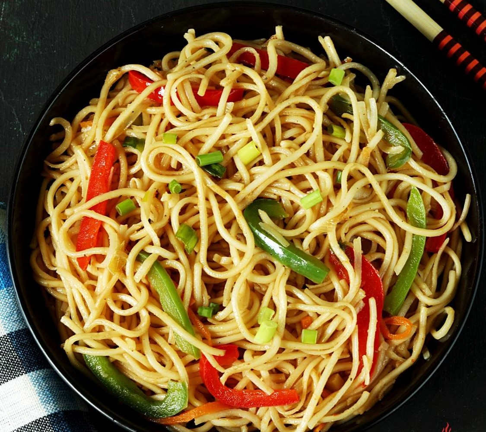

Noodles

Description
Noodles are a type of food made from unleavened dough which is rolled flat and cut, stretched or extruded, into long strips or strings. Noodles can be refrigerated for short-term storage or dried and stored for future use.
Noodles are usually cooked in boiling water, sometimes with cooking oil or salt added. They are also often pan-fried or deep-fried. Noodle dishes can include a sauce or noodles can be put into soup. The material composition and geocultural origin is specific to each type of a wide variety of noodles. Noodles are a staple food in many cultures
Ingredients
- 2 cups Durum wheat flour
- ½ teaspoon salt
- ¼ teaspoon baking powder
- 3 eggs
- water as needed
Steps
- Combine flour, salt and baking powder. Mix in eggs and enough water to make the dough workable. Knead dough until stiff. Roll into ball and cut into quarters. Using 1/4 of the dough at a time, roll flat to about 1/8 inch use flour as needed, top and bottom, to prevent sticking.
- Peel up and roll from one end to the other. Cut roll into 3/8 inch strips.
- Noodles should be about 4 to 5 inches long depending on how thin it was originally flattened. Let dry for 1 to 3 hours
- Cook like any pasta or, instead of drying first cook it fresh but make sure water is boiling and do not allow to stick. It takes practice to do this right.